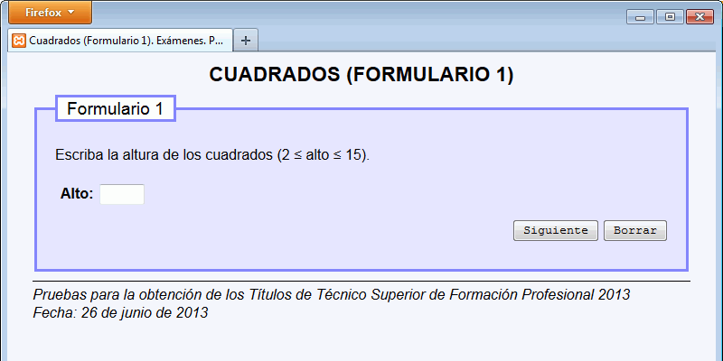
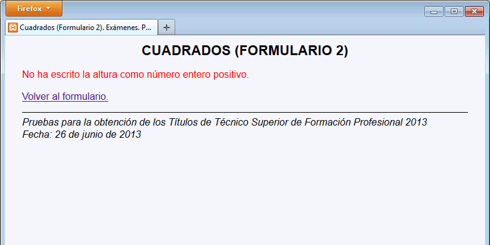
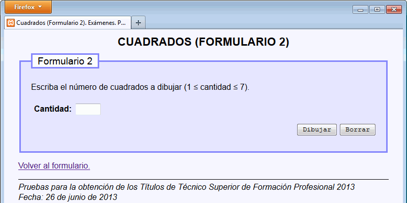
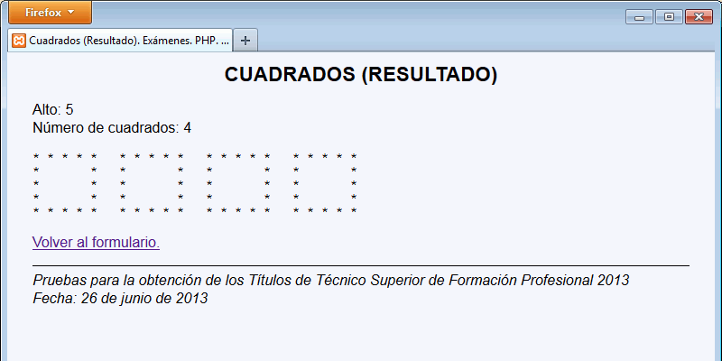

En este ejercicio se debe crear un programa que dibuje unos cuadrados de estrellas del tamaño y cantidad indicados por el usuario:
Alto: 6 Número de cuadrados: 4 * * * * * * * * * * * * * * * * * * * * * * * * * * * * * * * * * * * * * * * * * * * * * * * * * * * * * * * * * * * * * * * * * * * * * * * * * * * * * * * *



